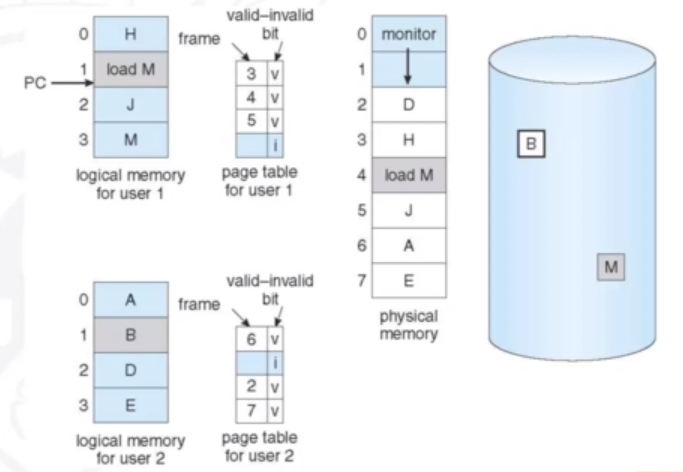
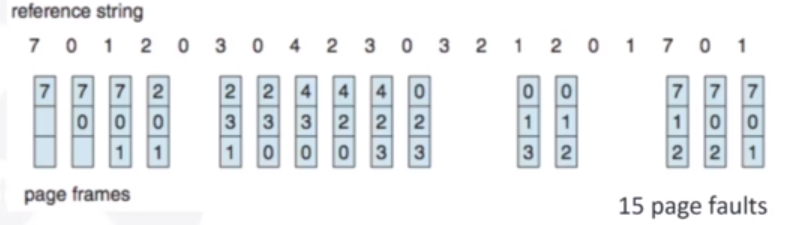

Topics:
- Principles of Computer Design
- Introduction to RISC Pipieline
- Pipeline Hazards
- Control Hazards and Branch Prediction
- Virtual Memory
- Page Replacement
- Introduction to Cache Memory
- Block Replacement & Write Strategy
- Cache Optimisation
- Hardware Multithreading
- System Protection and Security
Principles of Computer Design
Measuring Performance
How can we say one computer/architecture is better than another?
A system could be faster than other depending on exeuction time or throughput (transactions per unit time).
A system X will be n times faster than another system Y for:
Execution Time Y / Executon time X = n (we divide y by x because smaller time is desired)
Throughput X / Throughput Y = n
There are a number of performance metrics we can use for systems:
- Response item
- Throughput
- CPU time
- Wall clock time
- Speedup
Benchmark Suites
Benchmark suites are large programs that are widely used for determining performance of hardware. For example, SPEC06 or SPLASH. They perform various common functions such as compression, or searching.
With SPEC, there is a a parameter called SPEC ratio. It is defined by the execution time of a program by a reference machine compared to another machine A.

The execution time of one machine B divided by another A is the same as the performance of A divided by the performance of B.
You may have a number of benchmarks for a specific machine, so taking the geometric mean of A1 up to Ai gives the average SPEC ratio for the machine.
Geometric mean is defined as the nth root of the sum of the benchmarks of 1 to n.
Amdahl's Law
This is the speedup that can be gained by improving some portion of a computer. It is limited by the fraction of how long the faster bit can be used:

We can apply Amhdahl's Law to parallel processing. If a is the fraction of processors we can make parallel, and n is the total amount of processors, the speed up we gain from
making them parallel will be 1/ ((1-a) + a/n).
This can be graphed:

CPU Clock
All processors are driven by the clock, expressed as clock rate in GHz (cycles per second) or clock period in ns (nanoseconds). The CPU time is the number of CPU clock cycles for a given program multiplied by the clock cycle time. Clock cycle time is the seconds the program took / clock cycle time. There are a number of metrics involved in calculating CPU time:
- IC (instruction count): the number of instructions in a given program. Can be split up by number of Branch, Load, and ALU instructions.
- CLI: cycles per instruction. Different instructions may have different CLIs. CLI * IC gives number of cycles.
- Clock cycle time: the time it takes for a given clock cycle. Calculated by 1/clock rate.
Introduction to RISC Pipeline
RISC stands for Reduced Instruction Set Computer. There are 32 registers (32 bit each) in a RISC machine. Instructions are of uniform length and a RISC-Load store architecutre is used. The registers are 32 bits, so instructions are represented as 4 bytes.
There are 3 types of instruction. R, I and J:
Brief notes on instructions
'lw' is 'load word' and loads a word from main memory into the destination register. For example lw $4 $8 will load whatever is at memory address register 8 into the destination register. An offset is used, e.g. lw $4 (4)$8 if we wanted to select the 4th part of memory address 8, for example in a list.
'sw' is 'store word' and stores a word from the register into main memory.
Pipelines
A pipeline is making sure the system is constantly busy. For example, if you had a washer, a dryer, and a place to fold clothes, instead of washing, drying and folding clothes one at a time, you would wash some clothes, then whilst they are drying, you would put more in the washer. Once the clothes are dry, you fold them, and put the newly washed clothes in the drier, and more in the washer. This way, no time gets wasted.
There are some pipelining charactersitics:
- Pipelining doesn't reduce latency of a single task. It improves the throughput of the entire workload.
- The pipeline rate is limited by the slowest pipeline stage.
- The potential speedup is equal to the number of pipe stages
- Unbalanced lengths of pipe stages reduces speedup (e.g. if you had to wait 2 hours for the washer but only 30 minutes for the drier, the washer is the bottleneck)
- The time to fill the pipeline and time to drain it reduces the speedup.
Pipelining partitions the system into multiple independent stages with added buffers between the stages.
The philosophy is that if we can partition parts of operations into subsections, we can reuse these for other instructions.
The RISC pipeline can be portrayed by this diagram:
It looks confusing, but we split it into sections. The green blocks are the pipeline register interfaces, and make up 5 stages:
- Instruction fetch (IF): Here, each instruction can take at most 5 clock cycles. The instruction is fetched from memory, based on the PC. We increment the PC by 4 because we know there are 4 bytes for each instruction.
- Instruction decode (ID): Here, the instruction is decoded with a fixed field decoding method e.g. ADD R1,R2,R3 gets split into 4 sections (4 bytes).
- Execution (EX): Here, the operation is executed. If the operation is LOAD or STORE, the memory reference needs to calculated. This involves calculating the effective address. There could also be a register-register ALU instruction instead, where values from registers are operated on according to the OPCODE (e.g. ADD).
- Memory access cycle (MEM): This stage is only used by LOAD or STORE instructions, not ALU. If it is a LOAD instruction, we load from memory and store whatever is There in the register. If it is a STORE instruction, we store the data from the register in memory.
- Write-back cycle: If we have a destination register, we need to write it back to the register file.

Pipelining issues
Ideally, the computation to be performed can be evenly partintioned into uniform-latency sub-computations. In reality, there is internal fragmentation; not all pipeline stages may have uniform latency. Since memory access is a critical sub-computation, memory addressing modes should be minimized (as it is slow) and fast cache memories should be employed.
Secondly, we would ideally have identical computations; the same computation would be performed repeatedly on a large dumber of input data sets. In reality, there is external fragmentation; some pipeline stages may not be used. To combat this, we can reduce the commplexity and diversity of the instruction types. In RISC, this is what is used: RISC architectures use uniform stage simple instructions.
Thirdly, there is an issue in pipelines stalls. Ideally, all instructions would be mutually independent but in reality, a later computation may require the result of an earlier one. To combat this, reduce memory addressing modes so we reduce dependency detection. We can also use register addressing mode where it easy to check for dependency.
Pipeline Hazards
Limits to pipelining
Hazards: circumstances that would cause incorrect execution if the next instruction is fetched and executed- Structural hazards: this is where different instructions, at different stages, in the pipeline want to use the same hardare resources
- Data hazards: where an instruction in the pipeline requires data to be computed by a previous instruction still in the pipeline
- Control hazards:where a succeeding instruction, to put into the pipeline, depends on the outcome of a previous branch instruction that is already in the pipeline
Structural Hazards
Take for example the following scenario. "Uniport memory" simply means only one thing can be read from the memory at any given time.

There is a problem with the third instruction, since it is trying to access the memory at the same time as the first.
To resolve strucutral hazards we need to eliminate the use of the same hardare for two different things at the same time. One solution is to simply wait for whatever is using the hardware to finish. This means we must detect the hazard and have some kind of mechanism to stall. Another solution is to duplicate the hardware. Multiple such units will help both instructions to progress.
We can detect the fact that the same memory is being accessed by two operations and resolve the hazard. To resolve, the instruction can be 'shifted' in that we wait until the next cycle to start the instruction. Another way to resolve the hazard is by introducing two caches, essentially 'duplicating' our hardware. One cache is exclusively for stroing instructions, where it will only be accessed during FETCH, and another cache will only be accessed when accessing data.
Data Hazards
In the following scenario, a data hazard appears as the register 'R1' is required in successive operations, but is not calculated until the end of the first instruction. By this time, other instructions are already in the pipeline.
Three generic data hazards:
- Read After Write (RAW): instruction J tries to read operand before instruction I writes it e.g. I: add r1,r2,r3 followed by J: sub r4,r1,r3. This is caused by a data dependence and results from a need of communication.
- Write after Read (WAR): instruction J writes operand before instruction I reads it (essentially reverse of RAW). This is called an anti-dependence by compiler writers. It results from reuse of the the register name. This cannot happen in a 5 stage pipeline since all instructions take 5 stages and reads are always in stage 2 whilst writes are in stage 5.
- Writer After Writer (WAW): instruction J writes operand before instruction I writes it. This is called an output dependence. This also cannot happens in a 5 stage pipeline as writes are always in stage 5.
Handling Data Hazards
The problem is that instructions need data from the result of previous instructions that are still executing in the pipeline. The solution, therefore, is to forward data when possible.

As we are interested in R2 + R3, we can forward this to the input of the execution for the next instruction. Because writing and reading to registers is quicker than a clock cycle, this is possible. Generally reading from a register takes half a clock cycle.
Data after the EX or MEM stage will need to be given back to the ALU, as shown in the diagram below.

There can still, however, be data hazards even with operand forwarding. For example, a load instruction won't be able to forward to ALU in time; it will be one clock cycle too late. To combat this, we can 'bubble' instructions for one cycle (i.e. stall). Alternatively, we can use software scheduling. This involves detecting data dependencies and reordering instructions so that a load instruction and a following ALU instruction for whatever is being loaded can be seperated.

Control Hazards
By the time we want to branch to 36, instruction 14, 18, and 22 have all entered the pipeline. Because we want to branch, these instructions are incorrect. These kinds of hazards are known as control hazards.
They happens because the branch decision is very late in the pipeline (at the MEM stage). Only branch decisions that rely on checking two register (i.e. equality check) will present hazards, as they involve an operation that can only be done at the Ewd
Control Hazards and Branch Prediction
Recap
To recap: branch instructions will generally be known in the fourth stage, meaning that other instructions that we may not want or need to execute enter the pipeline. This means
we need to flush three instructions from the pipeline.
Instead, we can try and evaluate the branch instruction in the second stage, meaning we only need to flush one instruction from the pipeline (which is less complex than three).
This requires the ALU, because the only possible way to check a branch instruction in the second stage is to check whether a value is equal to zero. Checking r1 == r2 means we need to
do r2 - r1 and check if the result is equal to zero.
Alternatives
There are four ways of dealing with branch hazards:
1. Stall until the branch direction is clear
If we know that an instruction is a branch then we can temporarily stall further operation fetching. The moment that the branch outcome is clear, we can then fetch from the appropriate location.
2. Predict the branch will not be taken
If we predict the branch will not happen, we will bring a successor instruction into the pipeline. If it turns out that the branch does get taken, we need to 'squash' the instruction that gets added to the pipeline.
3. Predict that the branch will be taken
To predict that the branch gets taken means we need to load instructions from the branch target address. However, this is not known at the IF stage. The target is known at the same time as the branch outcome (the ID stage) therefore a 1 cycle branch penalty will still be incurred (because the target isn't known for 1 cycle).
4. Delay the branch
We define the branch to take place AFTER one instruction that follows the branch instruction. The 1 slot delay will allow the proper decision and branch target address in a 5 stage pipeline. However, the key question is where to get the instruction to fill the branch delay slot?
Filling the delay slot
We can fill the branch delay slot in a number of ways, depending on the branch or the instruction:

We can see that some instructions are not dependent on the previous instructions. These can fill the delay slot. c) is used if there is a high possibility the branch is not taken (as we will have to flush the delay instruction otherwise). Therefore we can combine solutions.
Conditional Branches
- When do you know you have a branch? During the ID cycle
- When do you know if the branch is taken or not-taken? During the EXE cycle or the ID stage depending on the design.
- When the pipeline is deep (10+ stages) which is the situation in modern pipelines
- When there are several instructions issued per cycle
- When several predicted branches are in-flight at the same time
Dynamic Branch Prediction
Execution of a branch requires knowledge of a few things:
- The branch instruction: we encode whether an instruction is a branch or not, and decide on whether it's take or not taken. This can be done at the IF stage.
- Whether the branch is taken or not-taken
- If the branch is taken, what is the target address? This can be computed but can also be 'precomputed' i.e. stored in a table.
- If the branch is taken, what is the instruction at the branch target address?
To do this, we can use a Branch Prediction Buffer (BPB). This is also called a Branch Prediction/History Table (BPT/BHT). It records the previous outcomes of the branch instructions. A prediction using BPB is attempted when the branch instruction is fetched (IF stage). It is then acted upon during the ID stage, once we know we have a branch.
There are two decisions in using the BPB. First of all, we need to know wether a prediction has been made. Then need to know whether it is a correct or incorrect decision. So, there are two cases:
- Case 1: A prediction was made and was correct (known at ID stage), or no prediction was made but the default was correct: no delays.
- Case 2: A prediction was made and was not correct, or no prediction was made and the default was incorrect: delays.
We could use a 1-bit predictor, shown here as an FSM. If we mis-predict, then we change what we next predict, and vice versa:

We can use a 2-bit predictor that allows branches that favor taken (or not taken) to be mispredicted less often than the one-bit case:
Branch prediction, as you can imagine, is very useful in loops. This is because the branch conditions will be similar, if we are looping a lot. A simple branch prediction can be implemented using a small amount of memory, indexed by lower order bits of the address of the branch instructions (the BPB). One bit stores whether the branch was taken or not, and the next time the branch instruction is fetched, we refer to this bit. For example, a branch instruction at program counter '2000' in memory is stored in a table with '1011' which refers to the last four outcomes of this branch (taken, not taken, taken, taken). Then we could use a 4-bit predictor to predict if it branches or not. So when we next refer to this entry (the program counter is 2000 again), we can see the outcome of the branch when it was last executed.
Advanced Branch Prediction Techniques
The basic 2-bit predictor will predict 'taken' (T) or 'not taken' (NT) for each brancch. If the prediction is wrong for two consecutive times, we change the prediction. Alternatively, there is something called a correlating predictor. Here, there are multiple 2-bit predictors for each branch. There is one for each possible combination of outcomes of preceding n branches. This works when the outcome of one branch may be dependent on the outcome of a branch before it.
A local predictor is where there are multiple 2-bit predictors for each branch but one for each possible combination of outcomes for the last n occurences for this branch.
A tournament predictor combines the correlating predictor with the local predictor.
In the branch-target buffer, we can store the isntruction at the branch address, which reduces the 'branch penalty' (i.e. cost)
Branch Folding
We want an optimization on the BTB such that we ahve a zero cycle branch. A large branch-target buffer will mean we can store one or more instructions. We can add the target instruction into the BTB to deal with the longer decoding time required by the larger buffer. Branch folding can be used to obtain 0-cycle unconditional branches and sometimes 0-cycle conditional branches.
Virtual Memory
Demand Paging
A program is permanently stored in a backing store and is swapped in (to main memory) as needed). The backing store is also split into storage units (called blocks) which are the same size as the frame and the pages. The program ends up with a small set of pages loaded in main-memory; the 'working set'. Programs are executed (more or less) sequentially and coverage of the program is generally small. Many functions of a program are seldomm used such as error handling routines, mutually exclusive modules, maintenance, etc.
The advantage of demand paging is that it allows programs to run that require much more memory than physically available (limited by secondary storage or addressing space) The requirements are to have a fast second storage device (DMA, which allow writing to memory from a secondary storage device without cpu) and that more decisions must be taken by the OS, such as what happens when all memory is full and a new page is needed, or a decision about which page to be replaced.
Demand paging is a key enabler of virtual memory.
Virtual Memory
The idea of virtual memory is to seperate the logical memory from physical memory. THe logical address space can be much larger than the physical (main memory) one, as only part of the program needs to be in main memory for execution, whilst the rest resides in secondary storage.
It enables for performance and resource efficiency, since there is less I/O needed to load or swap processes. It also allows for more efficient process creation. As shown in the image below, virtual memory is larger than physical, and it is mapped to both main memory and secondary storage. When a page that is not in main memory is requested, the DMA controller will swap it in.
Virtual Address Space
The logical address space is usually designed with a stack at the top to start at 'Max' and grown down, where a heap starts at zero and grows 'up'. This maximises address space use, with unused address space between the stack and heap. No physical memory will be needed until the heap ors tack grows to a given new page.
Doing it this way enables sparse address space with holes left for growth, and dynamically linked libraries. System libraries can be shared via a mapping into the virtual address space. Shared memory is done by mapping pages read-write into virtual addresss space. Pages can be shared during fork(), speeding process creation.
Demand Paging Mechanism
This is similar to the paging system with swapping. There is a pager: a swapper that deals with pages, and it only loads needed pages. A page is needed when there is a reference to it (a read/write to its address range). An invalid reference will be aborted, and a page not in memory, will be brought to memory.
When a process is to be swapped in, the pager predicts which pages will be used before the process is swapped out again. Instead of swapping in a whole process, the pager brings into mmemory only its estimate of the working set. The OS must distinguish between the pages that are in memmory, and the pages that are on the disk. It does this by using a valid-invalid scheme. If a page is needed and is not in the memory, it results in page fault. The OS needs to detect and load the page into memory from storage without changing the program behaviour and without the programmer needing to change any code.
In the image below, we can see what a page table looks like with the demand paging mechanism. The valid-invalid bit notes whether the page is in main memory or not.
Handling Page Faults
A page fault is an interrupt, where a context switch ensues. The process state is saved, and the OS restarts the instruction that caused the page fault, as the CPU will be in exactly the same state as prior to the memory reference. The OS actions upon a page fault are the following:
- Find a free frame
- Swap the page into the frame via a scheduled I/O operation (usually uses a DMA controller)
- Reset the tables to indicate the page is now in memmory (set the validation bit = v)
- Restart the instruction that caused the page fault
Graphically, the page fault can be represented as the following:
In the extreme case, a process may be started with none of its pages in memory. This means there will be pure demand paging where the OS sets the instruction-pointer to the first instruction of the process which will be non-memory-resident and result in a page fault. This will be the same for every other process paging on the first access.
A single instruction can access multiple pages and cause multiple page faults, such as an instruction that adds 2 numbers from memory, and stores the result in mmemory. These numbers way reside in two different pages.
Demand Paging Performance
To quantify the perforamnce, we can identify three major activities:
- Servicing the interrupt: a few hundred instructions
- Read in the page: lots of time
- Restart the process: a few hundred instructions
EAT = (1-p) x memory access time + p (page fault overhead + swap page out + swap page in)
To optimise the performance, we can allocate a 'swap space' - an area on the secondary storage device that manages swapping, instead of doing it through the file system. Here, swaps are allocated in larger chunks, so less management is needed. We can also copy entire process images to the swap space at process load time, and page in and out of the swap space.
Another way would be to, instead of paging out (i.e. writing back to secondary storage) when we are freeing a frame, if we know that the page was never written to then it can simply be overwritten, which is faster.
Another optimisation is Copy-On-Write mechanism. Here, both parent and child processes can initially share the same pages in memory. If either process modifies a shared page, only then is the page copied. This allows mmore efficient process creation, as only modified pages are copied. In Linux, the call is a variation on fork() (vfork()) and is very efficient.
The image below shows that a page (page C) being copied when it needs to be written to by the child process, but pages A and B are kept as shared:
Page Replacement
When the main memory is full, and we need to swap in a page, there needs to be some mechanism to choose which page to replace. There are a number of different replacement policies that are used. We want a decision-making algoirthm that will result in a minimum number of page faults. We therefore want to minimise pages being brought into memory multiple times, and maximise pages that are used often being kept in memory. The following iamge shows user needing the page 'B', but the physical memory is full.
As talked about in virtual memory, if we only write back pages that have been modified, we can speed-up page replacement. This is done using a modify ('dirty') bit. Only modified pages are written back to disk. Page replacement ensures we can have a separation between logical memory and physical memory.
The page replacement procedure is as follows:
- Find the location of the desired page on the disk
- Find a free frame:
- If there is a free frame, use it
- If there is no free frame, use a page replacement algorithm
- Select a victim frame
- Write victim frame to disk if modified (dirty)
- Bring the desired page into the (newly) free frame, and update the page and frame tables
- Continue the process by restarting the instruction that caused the trap
The page-replacement algorithm aims for the lowest page-fault rate on btoh first access and re-access. We can evaluate the algorithm by running it on a particular string of memory references and computing the number of page faults. The string would be
just page numbers, not full addresses, and the results depend on the number of frames available. For the following examples, the reference string of referenced page numbers is:
7,0,1,2,0,3,0,4,2,3,0,3,0,3,2,1,2,0,1,7,0,1
This can be read as a process that request page 7, then page 0, then page 1 etc.
Page Replacement: FIFO
The oldest page that has been located is the one that will be replaced with the FIFO algorithm. So, for the the reference string with 3 frames (meaning 4 pages can be in memory at a time per process) it will look like this:
We use a FIFO queue implementation to track the ages of pages. As shown, it is not a good algorithm, as there is no way of tracking which apges are used most frequently. With FIFO, a strange thing can happen where increasing frames actually increases page faults (which you would expect the opposite to happen). This is called Belady's Anomaly. This is very unintuitive and undesired.
Page Replacement: Optimal
The best page replacement policy would be replacing the page that will not be used for the longest period of time. In our example, this would result in 9 page faults:
Unfortunately, this is only theoretical as we cannot know the future. Therefore this is only used to find the upper-bound of optimisation for comparative evaluation.
Pagfe Replacement: LRU (Least Recently Used)
Here, we use the past knowledge rather than the future: we replace the page that has not been used for the longest period of time. We must therefore keep track of time of last use for each page
This results in 12 faults, which is better than FIFO. This is generally good and widely used, but there are implementation issues.
LRU Approximation Algorithms
These are similar to LRU, but without complex timestamping:
- Reference Bit: we associate a hardware provided bit with each page that is initially 0. When a page is referenced, the associated bit is set to 1. We then replace any page with a reference bit of 0 (if one exists).
- Second-chance Algorithm: this uses a FIFO scheme, but with the hardware-provided reference bit. If the page to be replaced has a reference bit of 0 then replace it, if it is 1 then we set it 0 and leave it in memory, and replace the next page with the same rules.
Page and Frame Locking
The OS may wish that some pages remain in physical memory frames such as parts of the OS code itself, or I/O buffers. Therefore, we use something called frame locking. If a frame is locked, it cannot be replaced. A lock bit is required for each frame, and this is usually supported in the OS rather than the hardware.
Frame Allocation
A frame allocation algorithm determines how many frames to give each process, and which frames to replace in case of scarcity. Each process needs a minimum amount of frames. The maximum will be the total frames in the system. There are many allocation schemes:
- Equal allocation
- Size-proportional allocation
- Priority Allocation
Global replacement is where a process selects a replacement frame from the set of all frames. One process can take a frame from another in this case, meaning that possibly a higher priority process could increase its allocated frames by taking a frame from a low priority process. Therefore the page fault behaviour of a process becomes dependent on the behaviour of other process. In this case, there is a greater overall throughput, so this is a common strategy (e.g. for Linux)
Local replacement is where each process selects from only its own set of allocated frames. This gives a more consistent per-process performance. If a process does not have a sufficient number of frames alllocated to it, the process will suffer many page faults (called thrashing). It also means memory could be underutilized.
Thrashing
If a process does not have 'enough' pages, the page-fault rate is very high. Because there are no free frames (otherwise they would have been allocated to the faulting process), we have to swap out a frame of another (active) process, and allocate the frame to the faulting process. The page that we swap out will be needed again, so a page fault will occur, and again there are no free frames. This leads to low CPU utilization and the OS thinking that it needs to increase the degree of multiprogramming (because it sees the CPU is idle), and another process will be added to the system, leading to even worse performance. Ultimately, thrashing is when a process is busy swapping pages in and out.
THe following graph shows how inccreasing multiprogramming increases CPU utilization up to a certain point, until processes start needing to constantly swap pages in and out as there are too many of them:
The locality model is where processes use pages in a certain range of addresses. Processes migrate from one locality to another, and localities may overlop. Thrashing occurs because the total size of a locality is greater than the total memory size. We can limit the effects of thrasing by using local page replacement and priority page replacement.
Working-Set Model
If we define delta to be a working-set window then we can:
- Analyze the most recent delta page references
- If a page is in use, it is in the working set delta
- If it is no longer used, it will drop from the working set delta time units after its last reference
WSSi tries to approximate the size of the locality of process Pi:
- If delta is too small then it will not encompass the entire locality
- If delta is too large then several localities will be encompassed
- As delta tends to infinity, it will encompass the entire program
Page-Fault Frequency
Alternatively, we can establish an 'acceptable' page-fault frequency (PFF) rate, and use a local replacement policy. If the actual rate is too low, the process loses a frame, if it is too high then the process gains a frame.
Introduction to Cache Memory
In a RISC pipeline, there is a memory component at the first stage, that is accessed by every instruction for a fetch. The memory access stage also needs to access memory, on a LOAD or STORE instruction.
CPUs have seen a very significant improvement in modern years as opposed to DRAM (memory).
In the CPU, the memory access componenets interact with the cache, which in turn is supplied from the main memory. In a computer, we can create the illusion of a very large and fast memory. We implement the memory of a computer as a hierarchy, with multiple levels having different speed and sizes. The entire addressable memory space is availible in the largest and slowest memory, and we keep the smaller and faster memories close the processor.
As you can see, there is a hierarchy of memory, and different levels of cache memory.
Cache memory is a small, fast buffer between the processor and the main memory. Old values will be removed from the cache to make space for new values. There are a few properties of memory referencing that cache memory takes into account:
- Principle of Locality: programs access a relatively small protion of their address space at any instant of time
Temporal locality
: if an item is referenced, it will tend to be referenced again soon- Spatial locality: if an item is referenced, items whose addresses are close will tend to be referenced sooner
Cache will always transfer words to the cache, whereas the main memory will transfer blocks
Key definitions:
- Block/Line: minimum unit of info that can be either present or not present in a cache level
- Hit: an access where the data requested by the processor is present in the cache
- Miss: an access where the data requested by the processor is not present in the cache
- Hit time: the time to access the cache memory block and return the data to the processor
- Hit rate/Miss rate: fraction of memory access found/not found in the cahce
- Miss penalty: time to replace a block in the cache and the corresponding block from the next level
CPU-Cache Interaction
The transfer unit between the CPU register file and the cache is a 4-byte word, and the transfer unit between the cache and main memory is a 4-word block (4*8 = 16B). As shown below, the tiny, very fast CPU register has room for only four 4-byte words (the red blocks). The small fast L1 cache has room for two 4-word blocks. The big and slow main memory has room for many 4-word blocks.
As shown below, the cache is organised into an array of sets. There are S sets that are rpresented by S2.
The cache size is B x E x S bytes. B is the bytes per cache block, E is the lines per set (that hold blocks), and S is the number of sets.
If the CPU requests address A then we know the word at address A is in the cache if the tag bits in one the valid lines in the set match the tag. There is also the block offset where the word contents begin from the beginning of the block.
Example
A cache has a 512KB capacity, 4B words, and a 64B block size. It is 8-way set associative (i.e. 8 blocks per set). The system is using a 32-bit address.
Given the address 0X ABC89984, which set of cache will be searched? Specify which word of the selected cache block will be forwarded if it is a hit in the cache.
Firstly, we want to calculate the number of sets in the cache. We do this by calculating the total size of a single set (64B per block and 8 blocks in a set = 8*64) and divide the total cache size by this. This works out to 219 / (26 x 23) = 210 or 1024 sets.
Given the address, we know that 16 bits will be given to the tag. We disregard this, as we assume it is a hit. Then 10 bits are given to the index, and 6 (4 for the word + 2 for the byte) to the offset. Therefore we caluclate using the last 4 hex values of the address: 9984 which comes out as 1001 1001 1000 0100. Working rom the right, the offset is 0001 00 which comes out as 1 + 0 = word 1 in the set. The set number will be the next 10 bits, or 1001 1001 10 which equals 614. Therefore set 614 will be searched, and word 1 selected.
There are essentially four cache memory design choices:
- Where can a block be placed in the cache? (block placement)
- How is a block found if its in the upper level? (block identification)
- Which block should be replaced on a miss? (block replacement)
- What happens on a write? (write strategy)
In terms of block placement, there are a number of ways to go about it. 'Direct mapped' cache means that an address of 12 in the main memory will go to the set 4 (12 mod 8) of an 8-set cache. However, two addresses than give the same location will not be able to coexist in the cache (e.g. 24 mod 8 and 16 mod 8). For a 2-way set associative cache, there are 4 sets in an 8-block cache. Therefore we do 12 mod 4, and get 0, meaning we can put the block anywhere in this set. A fully associative cache is where we can keep addresses anywhere in the cache.

Direct-Mapped Cache
This is the simplest kind of cache and easy to build. Only 1 tag compare is required per access, and is chracterized by exactly one line per set. The cache size is the block size * number of blocks.
Set selection is done by the set index bits. To access a set, the valid bit must be equal to 1, and the tag bits inm the cache line must match the tag bits in the address. If 1 and 2 are both true, then it is a cache hit, and we can select the block using the block offset.
An associate set is when there is more than one line per set. e.g. 2-set associative is two lines per set
Cache Indexing
Decoders are used for indexing, and the indexing time depends on the decoder size. If there are less sets, then there is less indexing time.
Block Replacement and Write Strategy
Block Replacement
The cache has finite size, so we need to find a way to replace blocks when it is full. For a direct-mapped cache it is easy, we just replacce what is at the tagged block. With a set associative cache, we need a way of deciding which block should be replaced in the set. There are many block replacement algorithms:
- Random
- First in First Out (FIFO)
- Last in First Out (LIFO)
- Least Recently Used (LRU)
- Pseduo-LRU (PLRU)
- Not Recently Used (NRU)
- Re Reference Interval Prediction (RRIP)
- Optimal
Random & FIFO
Random policy just needs pseduo-random number generator. FIFO policy evicts the block that has been in the cache the longest. It requires a queue to store references.
Least-Recently Used
For associativity = 2, LRU is equivalent to NMRU. We assign a bit as an LRU bit that indicates whether the block was recently used or not. For associativty greater than 2 (a > 2), it's more complicated as there are a number of ways to implement it. We could record timestamps, or use multiple LRU bits.
The implementation is shown in the image below. When there is a hit on CL 0, 0 becommes the most recently used, and the others are shifted upwards. This is the same for a hit with 4, and 7. When there is a miss, we replace CL6 as it is the least recently used, and make it the most recently used.
Optimal Replacement Policy
We evict the block with the longest reuse distance. This means the block that has the next reference farthest in the future. Obviously this requires knowledge of the future, so is only useful for modelling.
Pseudo-LRU Implementation
Rather than true LRU, we use a binary tree. Each node records which half is older/newer and we update nodes on each reference. To find the LRU victim, we follow older pointers.
Zero means that the upper-half is older, and the lower half is newer. One means the lower-half is older. Therefore 'B' is the LRU.
Not Recently Used (NRU)
Here we keep a NRU state in 1 bit/block. The bit is reset to 0 when installed/re-referenced. The bit is set to 1 when it is not referenced and another block in the same set is referenced. Evictions will then favour NRU=1 blocks. If all blocks are NRU=0/1 then it picks randomly.
This algorithm provides some scan and trash resistance. It randomizes evicctions a bit rather than a strict LRU order.
Re-reference Interval Prediction (RRIP)
This extends the NRU to multiple bits. The bit starts with a middle value and on a hit, gets promoted. Over time, the bit gets demoted. Therefore it can predict near-immediate, intermediate, and distant re-references quite well. For example, 0000 would indicate a very lightly used block and 1111 would indicate a very heavily used block. The bit value that a block would start with would be 8 (1000)
Least Frequently Used (LFU)
Here, there is a counter per block that gets incremented on a reference. Evictions will then choose the block with the lowest count. There is a storage overhead. If it uses 1-bit per block then it is the same as NRU.
Look-aside cache vs Look-through cache
A look-aside cache request from the processor will go to the cache and main memory in parallel. Cache and main memory both see the bus cycle: a cache miss will not need to trigger main memmory. If the processor is loaded from the cache then the bus cycle terminates, otherwise the processor and cache will both be loaded from main memory in parallel.
A look-through cache will first check the cache when the processor requests data from memory. On a cache hit, the data will be loaded from cache, on a miss the cache will be loaded from memory first, then the processor will be loaded from the cache.